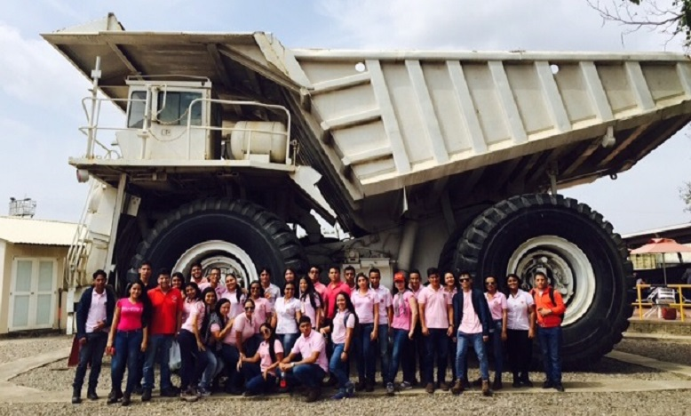

La Universidad Libre - Seccional Barranquilla se distingue por ofrecer una educación de calidad, enfocada en formar profesionales comprometidos con la sociedad y el desarrollo empresarial. El Programa de Ingeniería Industrial prepara a sus estudiantes para optimizar procesos, gestionar recursos y tomar decisiones estratégicas en cualquier organización. Con un cuerpo docente altamente calificado y un enfoque práctico, nuestros estudiantes desarrollan habilidades que les permiten destacarse en el mundo laboral, contribuyendo al crecimiento y la innovación en la industria.
El programa de Ingeniería Industrial de la Universidad Libre - Seccional Barranquilla cuenta con más de 25 años de trayectoria, formando profesionales íntegros, capaces de liderar procesos en distintos sectores productivos. Su enfoque combina la excelencia académica con el compromiso social, consolidándose como una opción sólida en la región Caribe.
Puedes ver nuestro video acerca del programa: